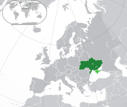

This article is about the country. For other uses, see Ukraine (disambiguation). "UKR" redirects here. For other uses, see UKR (disambiguation).
Ukraine (Ukrainian: Україна, romanized: Ukrayina, pronounced [ʊkrɐˈjinɐ] (About this soundlisten); Russian: Украи́на, tr. Ukraína, IPA: [ʊkrɐˈinə]) is a country in Eastern Europe.[8]
There are different hypotheses as to the etymology of the name Ukraine. According to the older widespread hypothesis, it means "borderland",[18] while some more recent linguistic studies claim a different meaning: "homeland" or "region, country".[19] "The Ukraine" used to be the usual form in English,[20] but since the Declaration of Independence of Ukraine, "the Ukraine" has become less common in the English-speaking world, and style-guides warn against its use in professional writing.[11][21] According to U.S. ambassador William Taylor, "The Ukraine" now implies disregard for the country's sovereignty.[22] The Ukrainian position is that the usage of "'The Ukraine' is incorrect both grammatically and politically."[23]
Kievan Rus' was founded in the territory of the Polans, who lived among the rivers Ros, Rosava, and Dnieper. Russian historian Boris Rybakov
During the 10th and 11th centuries, it became the largest and most powerful state in Europe.[39] It laid the foundation for the national identity of Ukrainians and Russians.
The first case of the coronavirus outbreak in Ukraine was recorded on 3 March.[208] On 13 March, the National Bank of Ukraine cut interest rates from 11% to 10% to help stop the coronavirus panic.
17 March the passage of Law No. 3219, "On Amending Certain Legislative Acts of Ukraine aimed at Preventing the Occurrence and Spread of Coronavirus Disease (COVID-19)" modified the Criminal Code of Ukraine to include rules of behaviour designed to halt the spread of the disease